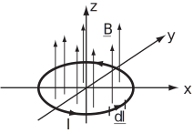

6 Engineering Example 2
6.1 Force on a loop from a magnetic field
Introduction
A current in a magnetic field is subject to a force given by
where the current can be regarded as having magnitude and flowing (positive charge) in the direction given by the vector . The force is known as the Lorentz force and is responsible for the workings of an electric motor. If current flows around a loop, the total force on the loop is given by the integral of around the loop, i.e.
where the closed path of the integral represents one circuit of the loop.
Figure 5:

Problem in words
A current of 1 amp flows around a circuit in the shape of the unit circle in the plane. A field of 1 gauss in the positive -direction is present. Find the total force on the circuit loop.
Mathematical statement of problem
Choose an origin at the centre of the circuit and use polar coordinates to describe the position of any point on the circuit and the length of a small element.
Calculate the line integral around the circuit representing the force using the given values of current and magnetic field.
Mathematical analysis
The circuit is described parametrically by
with
since is constant. Therefore, the force on the circuit is given by
(since A and G)
where
So
Hence there is no net force on the loop.
Interpretation
At any given point of the circle, the force on the point opposite is of the same magnitude but opposite direction, and so cancels, leaving a zero net force.
Tip: Use symmetry argument to avoid detailed calculations whenever possible!